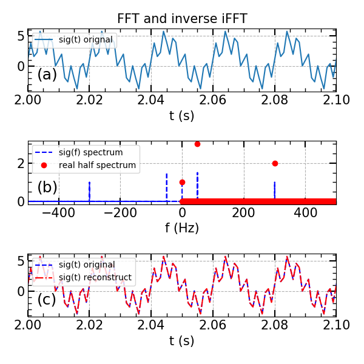

Fourier transformation is a classical and powerful tool in mathematics. However, there are also some details need to be given special attention during the numerical computation.
Principle of Fourier transformation
Fourier transformation is to convert a signal in the time/space domains to the domains of frequency or wave number . The Fourier transformation is defined as [1]:
The related inverse Fourier transformation is:
Where the signal frequency has the relation with the angular frequency/velocity as .
Discrete Fourier Transformation
In numerical computation, we must use discrete data, thus we must convert the analytic Fourier transformation to discrete transformation. Which is to say, we need to convert the integration to summation as [2]:
The related inverse discrete Fourier transformation is:
Fast Fourier Transformation (FFT)
Fast Fourier Transformation uses a highly efficient approach to calculate the discrete Fourier transformation. In many programming language, there are well written FFT module to use, such as matlab, python and fortran. However, during the calculation of Fourier strength, careful attention should be given. A standard example is given by matlab help doc as [3] shows. Among this code example, several key points shall be noticed.
- average fft amplitude by dividing the length of fft window L
1 | Y = fft(sig) |
This is because the fft approach by default do not normalized the strength. The raw result is a summation, the longer the nfft window, the stronger the strength. Thus, we must normalized the frequency amplitude by dividing the nfft window length [4].
- correct real half frequency amplitude
1 | P2 = abs(Y) |
Since the positive and negative frequency are joined together in the half positive strength, we should multiply the non-zero frequency amplitude by 2. However, the zero frequency component is unique, thus we don’t need to multiply it [3].
We can review this problem with python code as:
1 | import numpy |
Calculation result:

In this example, the test signal is: , this means that in the signal the strength of the 50 Hz component is 3, the amplitude of 300 Hz component is 2, the amplitude of 0 Hz component is 1. With the above code calculation, we can clearly see that after correction in the real half spectrum, the amplitude of the frequency component match to the given signal very well as figure (b) shows. Also the reconstructed signal matches well with the original signal. After the normalization, the unit of the spectrum density shall be the same as the original signal. eg, Bp(t) in Gs, Bp(f) also in Gs.
Reference
[1] 中科大高数教研室，高等数学导论，中科大出版社，合肥，2008，第三版。
[2] http://mathworld.wolfram.com/DiscreteFourierTransform.html